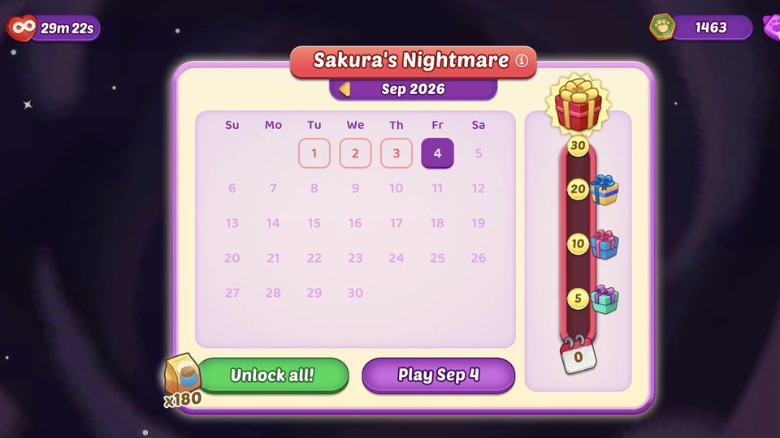
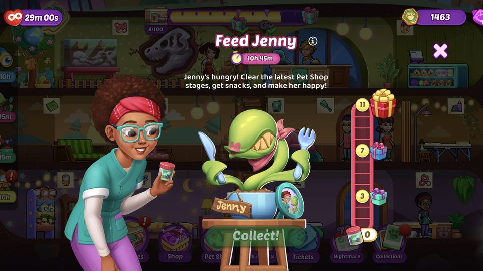
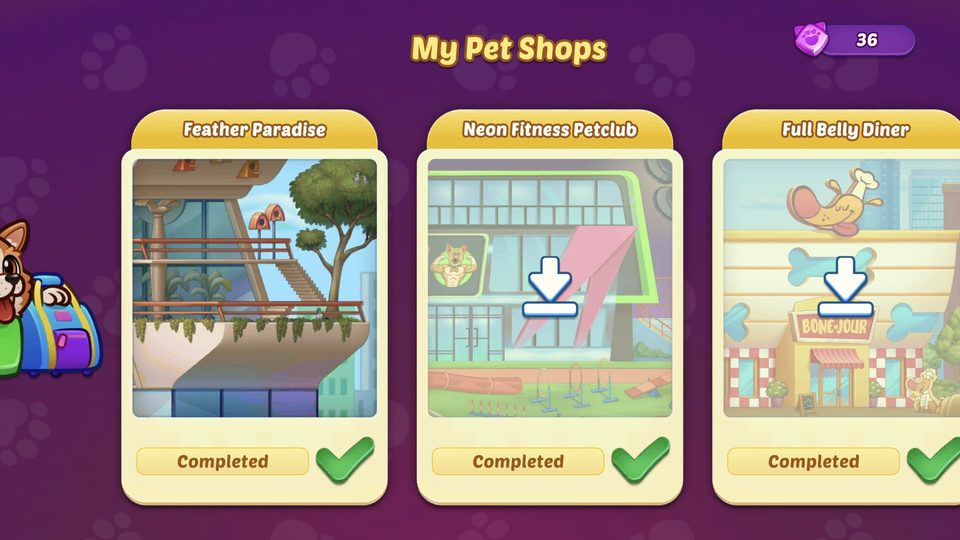
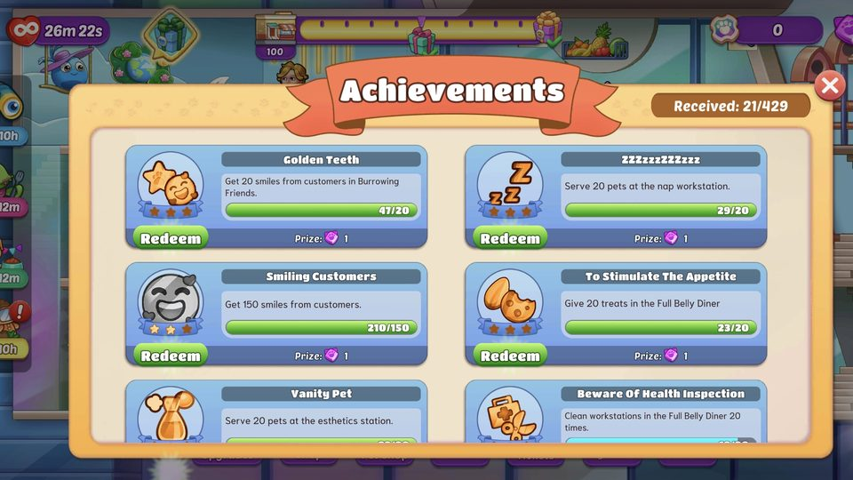
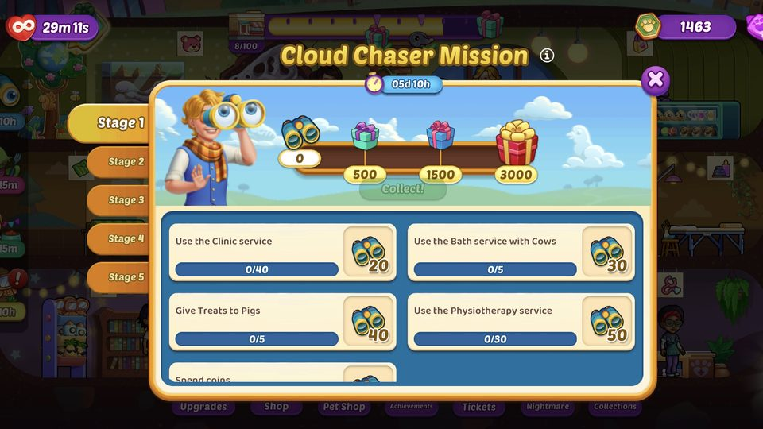
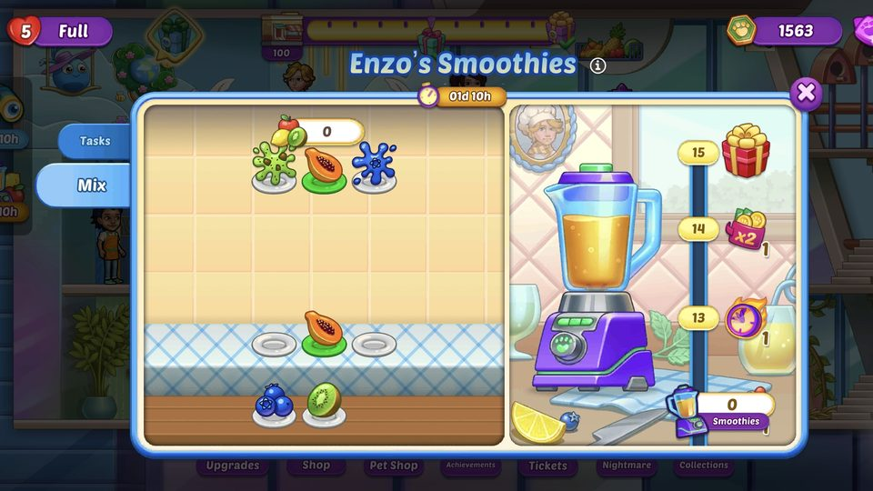
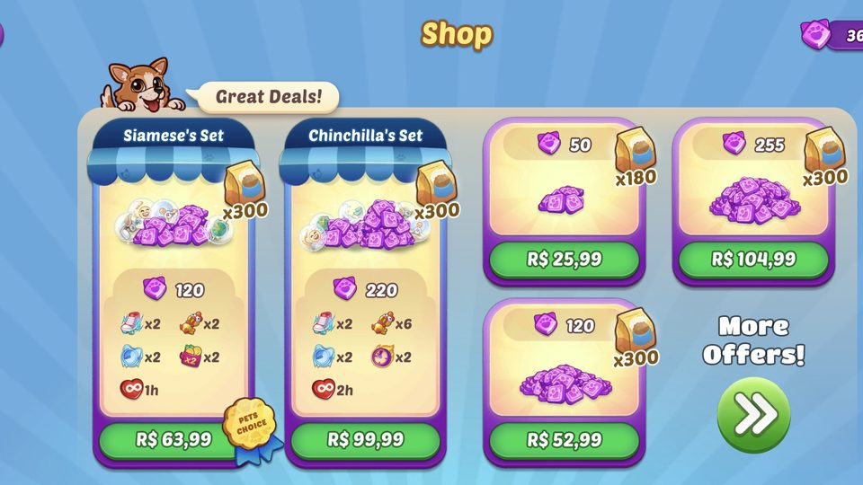
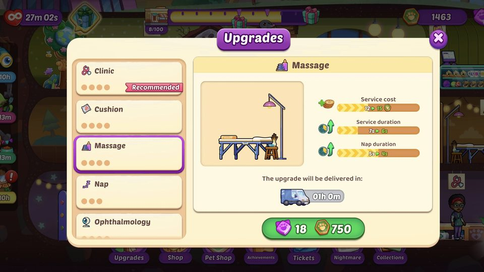
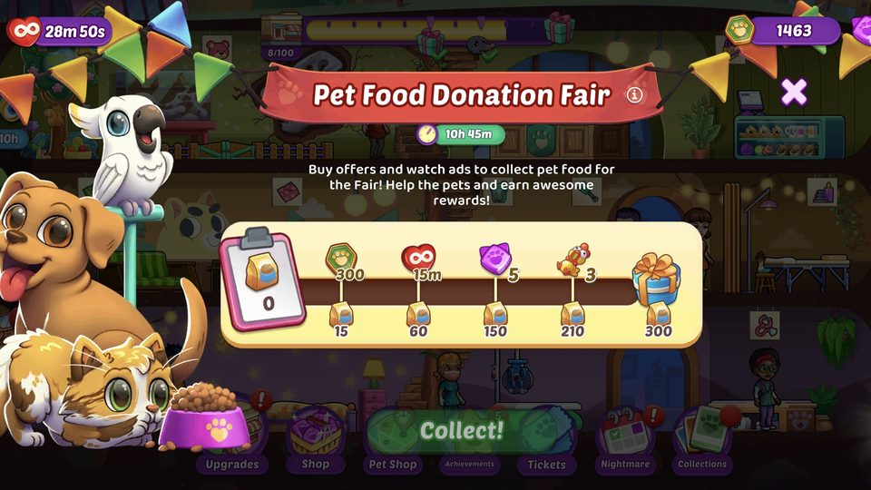

Pet Shop Fever
Um jogo de time management em operação, no qual o jogador constrói e expande uma rede de pet shops por vários mundos. Escrevo a narrativa — histórias de eventos, textos dentro do jogo e os arcos que conectam seus mundos — e projeto as features e a economia que o mantêm vivo.

Em ação
Dois dos minigames que projetei, gravados em uma build de desenvolvimento.
Visão geral
Pet Shop Fever é o título de time management em operação da Tapps Games: o jogador administra e expande uma rede de pet shops por vários mundos, cuidando dos animais e atendendo clientes. Está em operação há anos, então o trabalho é menos inventar um núcleo do zero e mais manter um jogo querido crescendo — história nova, features novas, eventos novos — sem quebrar o que já funciona.
Meu papel
Meu papel abrange três frentes: a narrativa do jogo, as features que levam o jogador de uma sessão para outra e a economia que amarra tudo. Desenvolvido em Unity, entregue com Scrum, ajustado por meio de playtests e de um programa contínuo de A/B testing.
Narrativa
Um jogo casual conquista retenção com motivos para voltar, e a história é um dos mais fortes. Eu escrevo a voz do jogo e as suas linhas narrativas.

LiveOps com enredo
Eventos como Sakura's Nightmare e Cloud Chaser Mission chegam com suas próprias histórias curtas, de modo que um evento é uma pequena história que o jogador quer acompanhar até o fim, e não apenas uma trilha de recompensas.

A voz do jogo
Diálogos, textos de tutorial, notificações e textos de eventos — um tom consistente entre personagens, menus e mensagens.

Fios entre os mundos
Arcos narrativos que conectam os mundos do jogo, para que avançar dê a sensação de percorrer uma história, e não de desbloquear uma lista.
Features que projetei

Sistemas de coleção
Conjuntos de itens colecionáveis dão ao jogador um objetivo que vive entre os momentos da história e alimenta a economia de recompensas.

Desafios diários
Objetivos curtos e repetíveis que recompensam o login diário e dão à economia uma fonte constante e previsível.

Minigames
Enzo's Smoothies e Dig, Find, Move! (acima) são minigames que projetei das regras à sensação de jogo, funcionando tanto como features independentes quanto como conteúdo de eventos.
Economia e progressão

Economia com várias moedas
As fontes de moeda soft e hard são mapeadas contra seus sinks em cada mundo, para que um mundo novo nunca comece com o jogador já em déficit.

Dificuldade e ritmo
O ritmo das fases e as curvas de vitória e derrota são ajustados para que o desafio continue significativo e para que boosters, vidas extras e Second Chance tenham um papel claro no jogo, e não só na loja.

Ofertas e valor de transação
A loja e as ofertas contextuais são moldadas e testadas em A/B testing para sustentar o jogo sem fazer a loja parecer uma barreira.
Desafios de design
Descreva aqui o principal desafio de design deste jogo e como você o abordou.
Resultados
Descreva aqui o que esse trabalho alcançou: métricas, retenção, receita ou feedback dos jogadores que você possa compartilhar.